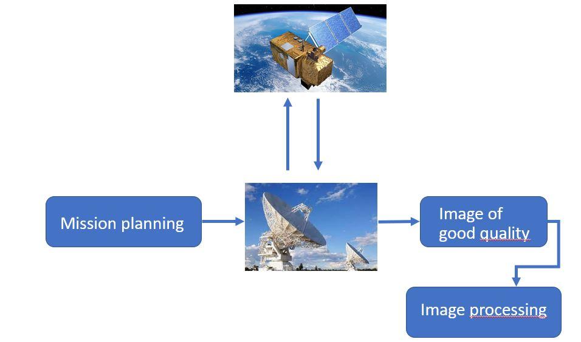

Python
- Pandas
- NumPy
- Scikit-learn
- Seaborn
- TensorFlow
- Pytorch
- Streamlit
- Plotly
- PySpark
Passionate AI Engineer & Data Scientist
Dedicated to leveraging the power of mathematics and computer science to unravel complex challenges and create innovative solutions that drive technological advancement.
Please note that I cannot share detailed information about the projects due to confidentiality reasons.This innovative project revolutionizes satellite operations by employing a rapid reinforcement learning-based mission planning algorithm, coupled with a compact, AI-driven image quality assessment model, enabling instantaneous optimization of image capture costs and efficient use of satellite storage space.
In the realm of satellite imagery, the process of planning missions to capture specific images involves intricate combinatorial mathematics. Traditionally, the task is time-consuming due to numerous variables. To expedite this process without compromising total costs, I implemented a reinforcement learning algorithm. This algorithm significantly reduced mission planning time compared to traditional mathematical models, resulting in slightly lower costs. The key advantage lies in the ability to dynamically update the satellite's mission plan instantaneously when it passes under a ground station antenna, allowing for real-time adjustments based on already captured images.
Addressing the challenge of distinguishing usable images from those affected by factors such as cloud cover, a Convolutional Neural Network (CNN) was developed. The CNN acts as an artificial intelligence (AI) model capable of assessing image quality before storage, preventing the unnecessary occupation of limited satellite storage space.
Embedding AI models into satellites poses challenges due to limited storage capacity. Three strategies were employed for efficient model integration:
The chosen solution involved a combination of all three methods, achieving a substantial reduction in storage space while maintaining accurate image quality assessments.
In summary, the project enables the instantaneous creation of a mission plan optimizing the overall cost of satellite image captures. The incorporation of a CNN allows the satellite to store only usable images, maximizing storage efficiency. Additionally, the ability to provide the satellite with an updated mission plan in real-time upon data transfer to a ground station enhances operational flexibility and responsiveness.
Predict the landing time of an aircraft from a certain distance from the airport using meteorological data, flight data, airport data through machine learning and deep learning models.
At Navblue, a subsidiary of Airbus, I spearheaded a project focused on revolutionizing aircraft landing time predictions. This endeavor involved a meticulous integration of meteorological, flight, and airport data through a combination of machine learning and deep learning models.
The datasets were diverse and intricate. For flight data, we delved into specifics such as historical landing times, aircraft type, and previous delays. Airport data encompassed details about the proximity of landing strips, airport congestion patterns, and historical performance. Meteorological data included parameters like wind speed, visibility, and atmospheric pressure. Merging these datasets formed a comprehensive foundation for our predictive models.
Ensuring data quality was paramount. We performed rigorous preprocessing to handle missing values, outliers, and inconsistencies. For flight data, we engineered features like time of day, day of the week, and holiday indicators to capture temporal patterns. Airport data underwent geospatial analysis to quantify the distance of landing strips from the aircraft's current position. Meteorological data required normalization and temporal alignment to synchronize with flight timelines.
In the initial stages, we applied machine learning techniques, including the robust XGBoost algorithm. Feature importance analysis guided us in understanding the contributions of different parameters. While effective, XGBoost faced challenges, especially in accurately predicting high delays.
Transitioning to deep learning, a neural network architecture was developed to capture complex relationships within the data. This model exhibited improvement over XGBoost, particularly in handling scenarios with increased delays.
Recognizing the temporal nature of flight data, we explored LSTM networks. The sequence-to-sequence learning capability of LSTMs allowed us to model the changing positions of aircraft over time, significantly enhancing our ability to predict delays accurately.
Upon meticulous validation, the LSTM model was deployed on Amazon Web Services (AWS). This cloud-based deployment ensured scalability, enabling real-time predictions and adaptability to varying operational demands. This comprehensive approach not only enhanced the accuracy of landing time predictions but also laid the foundation for a more resilient and adaptable system for Navblue.
Collect, process and analyze flight data recorded by Rafale aircraft in service with the forces in order to simulate, through numerical models, the structural mechanical damage of the entire Rafale aircraft developed by Dassault.
This project, centered around data, plays a crucial role in the DGA TA's operations. The initial phase involved the creation and conceptualization of the database, encompassing the design of tables, columns, primary and foreign keys, and establishing relationships between tables.
Once the data was appropriately organized, the subsequent step focused on optimizing calculations essential for estimating damages incurred by each component of the Rafale aircraft, utilizing mathematical models. Due to the sensitivity of the data, specific details cannot be disclosed. However, advanced techniques such as Fourier series, LU decomposition of matrices and matrix calculations were employed to significantly reduce computation time.
The outcome of this initiative is an improved monitoring system for the health of Rafale fleet components, facilitating streamlined maintenance processes. This project not only contributes to a more efficient aircraft maintenance strategy but also underscores the significance of data-driven approaches in enhancing operational effectiveness.
Unveiling the secrets of energy performance through advanced data-driven methodologies, this project expertly integrates Matrix Profile algorithms and innovative Deep Learning techniques, providing a captivating exploration into the intricate world of multivariate time series analysis for enhanced energy production efficiency and anomaly detection.
The project addresses the needs of a software company specializing in energy performance management. With sensors deployed in an energy production facility, the company collects time-indexed numerical data for machine operations. The goal is to explain the results of an AI model for time series analysis, focusing on understanding disparities and gaining insights into multivariate time series.
The Matrix Profile algorithm, introduced in 2016, is employed to detect anomalies or recurring patterns within one or more time series. The report introduces essential definitions such as time series, window, subseries, motif, and Matrix Profile. It details the calculation of Euclidean Z-normalized distance and the use of Pearson correlation for similarity assessment.
This section is based on a Deep Learning approach using Autoencoders to detect patterns and gain understanding from multivariate time series. The chosen architecture is a convolutional neural network autoencoder. The study focuses on enhancing interpretability by addressing the issue of redundancy and correlation in motifs extracted by manually defined convolutional filters. Techniques such as adaptive rectified linear units (adarelu) and regularization are introduced to improve motif interpretability and automatically determine the relevant number of motifs.
In conclusion, the report explores two methods for analyzing multivariate time series, yielding promising results. The discussion emphasizes the importance of carefully considering whether machine learning or deep learning is necessary, as algorithmic approaches can often achieve excellent results more cost-effectively. The project underscores the topical nature of explainable AI (XAI) and multivariate time series analysis, acknowledging the ongoing research in these fields.
If you can read french and you wish to gain further insights into this subject, I suggest reviewing the technical paper authored collaboratively with my colleagues: Download Paper
NutriCuisine utilizes web scraping, nutrition databases, and advanced NLP-driven algorithms to help users plan personalized meals. Input your details and available ingredients, and let the system recommend a balanced combination of starters, meals, and desserts tailored to your nutritional needs.
Utilizing web scraping, NutriCuisine fetches recipes from the renowned French website Marmiton. This vast database provides millions of recipes with detailed ingredients and instructions, but lacks crucial calorie information, a gap effectively filled by NutriCuisine.
The acquired data undergoes thorough cleaning and parsing to enhance its structure and readability. This step ensures a consistent format, making subsequent processes more efficient.
Mapping each ingredient to its nutritional resources involves integrating a comprehensive nutrition database. Challenges arise when dealing with varied portion sizes, such as slices instead of standardized grams. Custom operations are implemented to overcome these intricacies.
To calculate individual nutritional requirements, NutriCuisine employs the Mifflin-St Jeor formula:
After obtaining the BMR, the total daily calorie needs are determined by multiplying the BMR by an activity factor based on the individual's level of physical activity:
The resulting value represents the estimated daily calorie requirement for the user based on their characteristics and activity level.
A sophisticated neural network, complemented by embedding techniques, is developed. This model, given user attributes and nutritional needs, creates optimal combinations of starters, meals, and desserts. The embedding process groups ingredients with similar nutritional profiles, fostering creativity and coherence in the generated recipes.
NutriCuisine presents a user-friendly interface built on Streamlit. Users input personal details, including weight, height, sex, and activity level. Additionally, they can specify any disliked or allergenic ingredients. The model then delivers the top four recipes that precisely align with the user's nutritional requirements and preferences.
This comprehensive approach ensures NutriCuisine's ability to not only recommend personalized recipes but also cater to users' dietary restrictions and preferences with a seamless and intuitive interface.